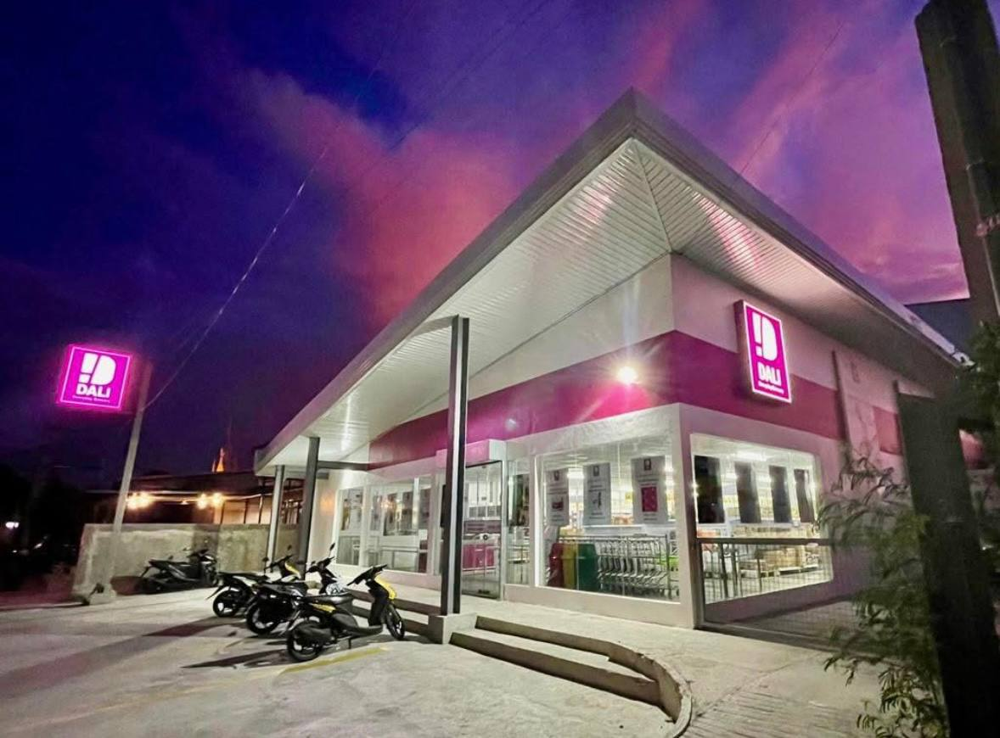

DA wants DALI, at one new store a day, as a contract buyer for vegetables
7 Oct 2026
Context.ph: The Department of Agriculture is exploring a partnership that would make DALI Everyday Grocery a direct buyer and a possible contract-growing partner for farm cooperatives. Agriculture Secretary Francisco Tiu Laurel Jr. met DALI board director Thirdie Icasas on Wednesday, and he has told DA to connect DALI with trusted farmer groups right away. Assistant Secretary Genevieve Velicaria-Guevarra said highland and lowland vegetable growers stand to gain most. DALI runs 1,403 neighborhood stores serving over 10 million customers a month and opens roughly one a day. It targets 1,600 by end-2026 and 16,000 by 2035. It already sources potatoes direct, and it plans warehouses near Benguet and Pangasinan to consolidate produce before trucking it to Metro Manila. The two sides also discussed the 46-hectare Clark Food Hub, planned facilities in Tiaong, Quezon; Lipa, Batangas; Manolo Fortich and Cebu, and a cold store near the Benguet Agri-Pinoy Trading Center. DALI, which began importing apples, garlic and pears in June, asked for help on clearances and tariffs. Operator read: these are talks, not a signed deal, but the direction is clear. The biggest new private buyer of vegetables wants contracts with co-ops, and DA is acting as matchmaker. With vegetable inflation at 10.7% in September and the dry season coming, the restaurants that come through summer on margin will be the ones with a contracted supply of cabbage, carrots and onions rather than buying from the wet market week to week. The DA desk that is matching DALI with co-ops can match a restaurant group too, so ask it. Watch Lipa and Tiaong: a DA facility there would shorten the produce run for any kitchen in Laguna or Batangas. For an opener, DALI’s pace is also a warning. Where DALI already has a store, home-cooked meals get cheaper, so a value rice-meal concept has to beat a DALI basket, not just Jollibee.